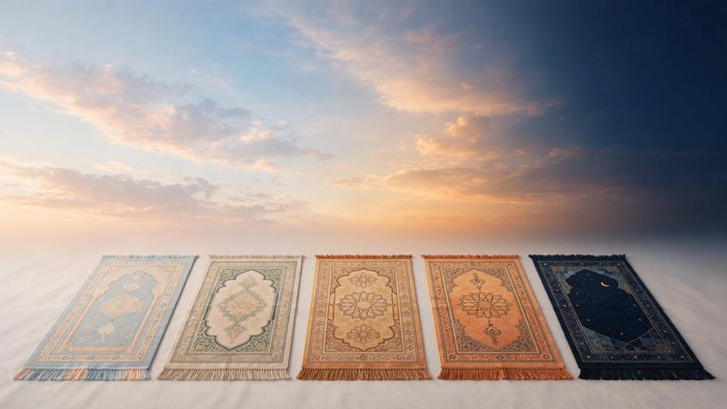

5 Daily Prayers in Islam: Names, Times & Rak'ahs

The five daily prayers, known as Salah, are fundamental acts of worship in Islam. Muslims perform Fajr, Dhuhr, Asr, Maghrib and Isha at their appointed times throughout the day and night. If you are new to Islamic prayer, begin with our complete guide to prayer in Islam and our step-by-step guide to praying Salah.
What Are the Five Daily Prayers?
The five obligatory prayers are performed at specific times each day. Together, they consist of 17 obligatory (fard) rak'ahs: two for Fajr, four for Dhuhr, four for Asr, three for Maghrib and four for Isha. These numbers refer to the obligatory prayers only, not additional Sunnah or voluntary prayers. Learn more about the rak'ahs in each prayer.
Prayer times are determined by the sun's position and vary by location and date. For the exact daily schedule in your area, consult a reliable local prayer timetable. Read our guide to prayer times in Islam.
1. Fajr Prayer
Fajr is the dawn prayer. Its time begins at true dawn and ends at sunrise. The obligatory Fajr prayer consists of two rak'ahs. Muslims may also perform the two emphasized Sunnah rak'ahs associated with Fajr, which are separate from the obligatory prayer. Learn how to pray Fajr step by step →
2. Dhuhr Prayer
Dhuhr is the midday prayer. Its time begins after the sun passes its highest point in the sky and continues until the time of Asr begins. It consists of four obligatory rak'ahs. Additional Sunnah prayers may be performed before or after Dhuhr. Learn how to pray Dhuhr step by step →
3. Asr Prayer
Asr is the afternoon prayer and consists of four obligatory rak'ahs. Its starting time is determined by shadow length, with a recognized difference among Islamic schools of jurisprudence. Asr should be performed before sunset, and Muslims should avoid delaying it unnecessarily. Learn how to pray Asr step by step →
4. Maghrib Prayer
Maghrib begins after sunset and consists of three obligatory rak'ahs. Its time continues into the evening, with scholarly differences concerning the precise end of its time. It is generally performed soon after sunset. Learn how to pray Maghrib step by step →
5. Isha Prayer
Isha is the night prayer. Its time begins after the evening twilight disappears and it consists of four obligatory rak'ahs. The precise details of twilight and the end of Isha time are discussed differently by scholars, so follow a reliable prayer timetable or qualified local guidance. Learn how to pray Isha step by step →
How Long Does Each Prayer Take?
The time needed to perform Salah varies according to the prayer, the recitation and the pace of the person praying. Muslims should aim to pray calmly and correctly rather than rush through the movements and recitation. Before beginning, make sure you have valid wudu and meet the conditions of Salah. You can also learn how to avoid common Salah mistakes.
What Should Beginners Learn First?
Beginners can start by learning the prayer times, the required movements and the essential recitation used in Salah. Practising the steps with a knowledgeable teacher can help build confidence and correct mistakes. The following guides explain each part in more detail.
Learn More About Salah
📚 Salah Guides
- 🕌 Prayer in Islam: Complete Guide to Salah
- 📖 How to Pray Salah Step by Step
- 💧 How to Make Wudu Before Prayer
- 🗣️ What to Say in Salah
⏰ Prayer Times & Rak'ahs
- Prayer Times in Islam | How Many Rak'ahs in Each Prayer?
- Conditions of Salah | Common Salah Mistakes to Avoid
- What to Say After Salah (Adhkar)